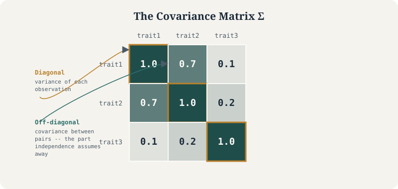

Why the off-diagonal terms decide whether your p-values are real
Statistical Genetics
GWAS
Mixed Models
R
Four real scenarios – relatedness, phylogenetic structure, and LD – where ignoring the covariance matrix silently breaks standard errors, with worked R simulations for each.
Author
Nivedita Bhadra
Published
June 15, 2026

The object at the center of every case in this tutorial: a covariance matrix’s diagonal describes each observation’s own variance, but it’s the off-diagonal terms – the part “independence” assumes away – that decide whether a p-value can be trusted.
CovarianceMixed ModelsGRMR
Very often atatistical models fail because we assume observations are independent when they are not. Repeated measurements from the same patient, genetic similarity between individuals, longitudinal studies, family data, spatial observations, and multivariate phenotypes all introduce correlation. Ignoring these dependencies produces misleading standard errors, inflated false-positive rates, and unreliable inference.
The mathematical object that describes these dependencies is the covariance matrix. It summarizes not only how variable each observation is, but also how every pair of observations varies together. Once that covariance structure is specified, many seemingly different statistical methods—from ordinary least squares to generalized least squares, linear mixed models, generalized estimating equations, phylogenetic regression, and modern GWAS methods—become variations of the same underlying framework.
In one sentence: a covariance matrix tells a statistical test which observations are allowed to be treated as independent, and every association test is, underneath, a decision about that matrix.
1 What a covariance matrix actually is
For a random vector \(\mathbf{y} = (y_1, \dots, y_n)^\top\), the covariance matrix \(\boldsymbol{\Sigma}\) collects every pairwise covariance:
The diagonal holds variances, \(\Sigma_{ii} = \text{Var}(y_i)\). The off-diagonal holds the covariances between pairs.
Why not just track variances? Because variance alone tells you how much a single variable moves. It says nothing about whether two variables move together. Two traits can each have large variance and still be uncorrelated, or have small variance and be almost perfectly redundant. The off-diagonal is where all the structure lives.
A quick simulated illustration: three correlated traits.
The sample covariance recovers the input structure: trait1 and trait2 move together (0.7), trait3 is nearly independent of trait1 (0.1).
2 Why the covariance matrix matters for statistical testing
Every standard test statistic (t-test, F-test, GWAS Wald test) is built assuming a specific \(\boldsymbol{\Sigma}\) for the residuals or the samples. The two default assumptions are:
Independence: \(\Sigma_{ij} = 0\) for \(i \neq j\).
Homoscedasticity: \(\Sigma_{ii} = \sigma^2\) for all \(i\).
Together these collapse \(\boldsymbol{\Sigma}\) to \(\sigma^2 \mathbf{I}\), the identity matrix scaled by a constant. Ordinary least squares, the standard GWAS regression, and the standard t-test all silently assume this.
What breaks when that assumption is wrong? Nothing about the point estimate. The regression coefficient \(\hat\beta\) stays unbiased. What breaks is the standard error, because the standard OLS variance formula \(\text{Var}(\hat\beta) = \sigma^2 (X^\top X)^{-1}\) is only correct when \(\boldsymbol{\Sigma} = \sigma^2\mathbf{I}\). If samples are actually correlated, the true variance of \(\hat\beta\) is \[
\text{Var}(\hat\beta) = (X^\top X)^{-1} X^\top \boldsymbol{\Sigma} X (X^\top X)^{-1}
\] Plugging in the wrong (diagonal) \(\boldsymbol{\Sigma}\) gives standard errors that are too small, meaning inflated test statistics, meaning false positives.
This is the single mechanism behind population stratification in GWAS, pseudoreplication in phylogenetic comparative methods, and the multiple-testing correlation problem in fine-mapping. Different names, same incorrect assumption.
3 Association testing under different covariance structures
The general form of an association test is a generalized least squares (GLS) problem:
\[
\hat\beta = (X^\top \boldsymbol{\Sigma}^{-1} X)^{-1} X^\top \boldsymbol{\Sigma}^{-1} y
\]
which reduces to ordinary least squares when \(\boldsymbol{\Sigma} = \sigma^2\mathbf{I}\). Every case below is the same equation with a different \(\boldsymbol{\Sigma}\) plugged in.
3.1 Case 1 — independent samples (the textbook GWAS test)
If individuals are unrelated and drawn from a single population, \(\boldsymbol{\Sigma} = \sigma^2 \mathbf{I}\) is a reasonable approximation, and a simple linear model per variant is valid:
No hidden structure, no correction needed. The standard GWAS Wald test is designed for such cases.
3.2 Case 2 — cryptic relatedness and population stratification
In reality cohorts are never fully unrelated, and subgroups can differ in both allele frequency and phenotype mean. This induces off-diagonal covariance between individuals that correlates with genotype, which is exactly the condition under which OLS standard errors become invalid.
We simulate two subpopulations with different means and a genotype frequency difference:
set.seed(2)n <-1000pop <-rep(c("A", "B"), each = n /2)# allele frequency differs by population -> stratificationfreq <-ifelse(pop =="A", 0.1, 0.4)genotype <-rbinom(n, 2, freq)# phenotype differs by population for reasons unrelated to genotypephenotype <-ifelse(pop =="A", 0, 1) +rnorm(n, sd =0.5)naive <-lm(phenotype ~ genotype)summary(naive)$coefficients["genotype", ]
Estimate
0.36051672383449
Std. Error
0.0312442835871719
t value
11.5386458719287
Pr(>|t|)
5.30984934684389e-29
Here genotype picks up a spurious association purely because it tags population membership, not because it affects the phenotype. The fix is to model the covariance directly, either with a genomic relationship matrix (GRM) in a mixed model, or with fixed-effect covariates (PCs) that absorb the structure. The mixed-model version:
\[
y = X\beta + Zu + \epsilon, \quad u \sim N(0, \sigma^2_g \mathbf{K}), \quad \epsilon \sim N(0, \sigma^2_e \mathbf{I})
\]
where \(\mathbf{K}\) is the GRM: \(K_{ij}\) estimates genome-wide relatedness between individuals \(i\) and \(j\) from marker data. This is exactly \(\boldsymbol{\Sigma}\) built from data instead of assumed to be diagonal.
# toy GRM from a small marker panel, standardised as in GCTA/GEMMA.# Crucially, these markers must actually carry the population signal --# a marker panel with the same allele frequency in both groups would# produce a GRM blind to the very structure we're trying to correct for.marker_freq_A <-runif(200, 0.05, 0.15)marker_freq_B <-runif(200, 0.25, 0.45)markers <-sapply(seq_len(200), function(j) { f <-ifelse(pop =="A", marker_freq_A[j], marker_freq_B[j])rbinom(n, 2, f)})markers_std <-scale(markers)K <-tcrossprod(markers_std) /ncol(markers_std)# correcting the naive test with the top structure-capturing PCs of Kpcs <-eigen(K)$vectors[, 1:2]corrected <-lm(phenotype ~ genotype + pcs)summary(corrected)$coefficients["genotype", ]
Estimate
0.0332531649087993
Std. Error
0.0267829897746121
t value
1.24157777711286
Pr(>|t|)
0.214684689209704
Adding the components that summarise \(\mathbf{K}\) absorbs the stratification signal and pulls the genotype effect back toward the null. Tools like GEMMA, SAIGE, and regenie fit the full mixed model rather than a PC approximation, but the logic is identical: replace the identity covariance with \(\mathbf{K}\).
3.3 Case 3 — non-independent taxa: PGLS
This scenario also appears in other fields. In a comparative dataset across species, closely related species resemble each other for reasons that have nothing to do with the trait being tested — shared evolutionary history, not shared biology of interest. Ordinary regression treats each species as an independent data point, so the effective sample size is inflated and p-values are anti-conservative.
Phylogenetic generalised least squares replaces \(\boldsymbol{\Sigma} = \sigma^2\mathbf{I}\) with a covariance matrix derived from the phylogeny, typically under Brownian motion: \(\Sigma_{ij}\) is the shared branch length from the root to the most recent common ancestor of species \(i\) and \(j\).
library(ape)library(nlme)set.seed(3)tree <-rtree(30)trait_x <-rTraitCont(tree, model ="BM")trait_y <-0.5* trait_x[tree$tip.label] +rTraitCont(tree, model ="BM", sigma =0.5)d <-data.frame(species = tree$tip.label, x = trait_x[tree$tip.label], y = trait_y)naive_ols <-lm(y ~ x, data = d)pgls_fit <-gls(y ~ x, data = d, correlation =corBrownian(phy = tree, form =~species))summary(naive_ols)$coefficients["x", ]summary(pgls_fit)$tTable["x", ]
Estimate
0.887154063958009
Std. Error
1.95739468827265
t value
0.453232078983979
Pr(>|t|)
0.653874585786409
Value
1.3394774022645
Std.Error
1.3131699537816
t-value
1.02003354433076
p-value
0.316445575574491
Same data, two different assumed covariance matrices, two different standard errors on the same point estimate. This is the direct cousin of Case 2: relatedness there is genetic and pairwise (the GRM), relatedness here is phylogenetic and hierarchical (branch-length covariance), but the correction mechanism — swap \(\mathbf{I}\) for the real \(\boldsymbol{\Sigma}\) — is the same equation.
3.4 Case 4 — correlated variants: joint testing and colocalization
The covariance problem also shows up across variants rather than across samples. Nearby SNPs in linkage disequilibrium (LD) have correlated genotypes, so their marginal association test statistics are correlated even under the null. Ignoring this inflates the effective number of independent tests and misleads fine-mapping.
The LD matrix \(R\) (correlation between genotypes at variants \(j\) and \(k\)) plays the role of \(\boldsymbol{\Sigma}\) here. A joint (multi-SNP) test statistic is:
where \(\mathbf{z}\) is the vector of marginal Wald z-scores. This is the same GLS logic again, just applied to summary statistics instead of raw phenotypes:
coloc.abf and conditional/joint (COJO) analyses both hinge on getting this \(R\) right; a mismatched LD reference panel is the single most common cause of spurious colocalization or fine-mapping results.
4 The pattern across all four cases
Case
What violates independence
Covariance matrix used
Fix
Unrelated individuals
none
\(\sigma^2 \mathbf{I}\)
plain OLS/Wald test
Cryptic relatedness / stratification
shared ancestry between individuals
GRM \(\mathbf{K}\)
linear mixed model
Cross-species comparison
shared phylogenetic history
Brownian-motion tree covariance
PGLS
Variants in LD
correlated genotypes across markers
LD matrix \(R\)
joint/conditional test, colocalization
Every row is the same generalized least squares equation with a different \(\boldsymbol{\Sigma}\). Therefore, whenever a test looks “too significant” relative to intuition, the first thing to check is not the effect size but whether the covariance structure of the data was estimated correctly.
5 Further reading
Yang, Lee, Goddard & Visscher (2011). GCTA: A tool for genome-wide complex trait analysis. American Journal of Human Genetics, 88(1), 76–82. https://doi.org/10.1016/j.ajhg.2010.11.011
Freckleton, Harvey & Pagel (2002). Phylogenetic analysis and comparative data: a test and review of evidence. American Naturalist, 160(6), 712–726. https://doi.org/10.1086/343873
Yang, Ferreira, Morris, et al. (2012). Conditional and joint multiple-SNP analysis of GWAS summary statistics identifies additional variants influencing complex traits. Nature Genetics, 44(4), 369–375. https://doi.org/10.1038/ng.2213